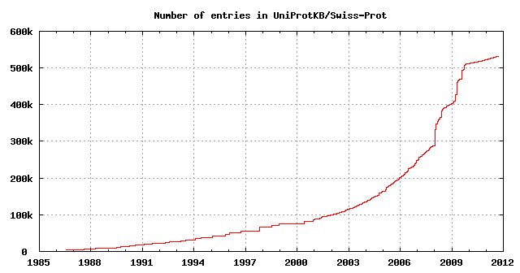
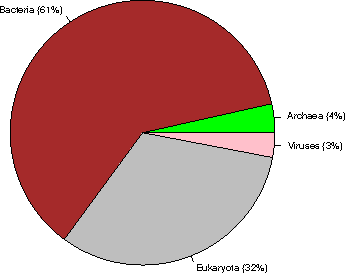
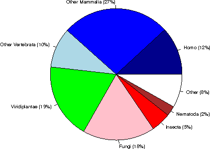
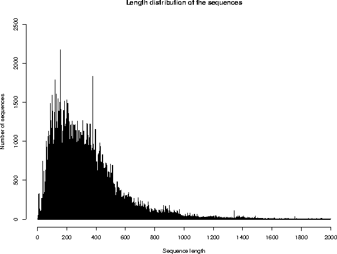
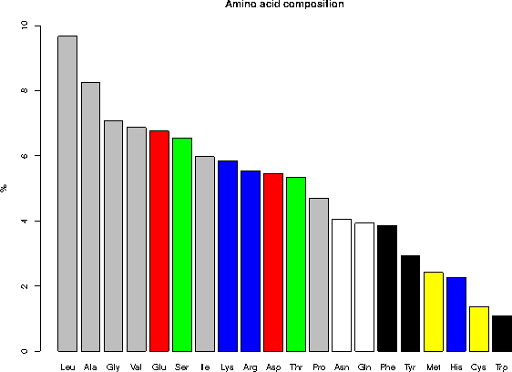

UniProtKB/Swiss-Prot protein knowledgebase release 2011_09 statistics
1. INTRODUCTION
Release 2011_09 of 21-Sep-11 of UniProtKB/Swiss-Prot contains 532146 sequence entries,
comprising 188719038 amino acids abstracted from 201639 references.
703 sequences have been added since release 2011_08, the sequence data of
200 existing entries has been updated and the annotations of
437465 entries have been revised.
Number of fragments: 8914
Number of additional sequences produced by alternative splicing, initiation or promoter usage, or ribosomal frameshifting: 30649
Protein existence (PE): entries %
1: Evidence at protein level 72765 13.7%
2: Evidence at transcript level 69863 13.1%
3: Inferred from homology 373177 70.1%
4: Predicted 14474 2.7%
5: Uncertain 1867 0.4%
The growth of the database is summarized below.

2. TAXONOMIC ORIGIN
Total number of species represented in this release of UniProtKB/Swiss-Prot: 12599
The first twenty species represent 110666 sequences: 20.8 % of the total
number of entries.
2.1 Table of the frequency of occurrence of species
Species represented 1x: 5319
2x: 1837
3x: 954
4x: 626
5x: 456
6x: 358
7x: 261
8x: 219
9x: 194
10x: 109
11- 20x: 641
21- 50x: 385
51-100x: 206
>100x: 1034
2.2 Table of the most represented species
------ --------- --------------------------------------------
Number Frequency Species
------ --------- --------------------------------------------
1 20248 Homo sapiens (Human)
2 16388 Mus musculus (Mouse)
3 10708 Arabidopsis thaliana (Mouse-ear cress)
4 7641 Rattus norvegicus (Rat)
5 6620 Saccharomyces cerevisiae (strain ATCC 204508 / S288c) (Baker's yeast)
6 5860 Bos taurus (Bovine)
7 4976 Schizosaccharomyces pombe (strain ATCC 38366 / 972) (Fission yeast)
8 4430 Escherichia coli (strain K12)
9 4244 Bacillus subtilis
10 4118 Dictyostelium discoideum (Slime mold)
11 3335 Caenorhabditis elegans
12 3321 Xenopus laevis (African clawed frog)
13 3125 Drosophila melanogaster (Fruit fly)
14 2797 Oryza sativa subsp. japonica (Rice)
15 2755 Danio rerio (Zebrafish) (Brachydanio rerio)
16 2219 Gallus gallus (Chicken)
17 2214 Pongo abelii (Sumatran orangutan)
18 2001 Escherichia coli O157:H7
19 1879 Mycobacterium tuberculosis
20 1787 Methanocaldococcus jannaschii
21 1786 Salmonella typhimurium
22 1707 Haemophilus influenzae (strain ATCC 51907 / DSM 11121 / KW20 / Rd)
23 1677 Shigella flexneri
24 1674 Escherichia coli O6
25 1609 Xenopus tropicalis (Western clawed frog) (Silurana tropicalis)
26 1401 Sus scrofa (Pig)
27 1344 Salmonella typhi
28 1285 Pseudomonas aeruginosa
29 1244 Mycobacterium bovis
30 1167 Macaca fascicularis (Crab-eating macaque) (Cynomolgus monkey)
31 1025 Synechocystis sp. (strain ATCC 27184 / PCC 6803 / N-1)
32 1003 Yersinia pestis
33 999 Archaeoglobus fulgidus
34 950 Vibrio cholerae
35 929 Salmonella paratyphi A
36 924 Staphylococcus aureus (strain N315)
37 923 Staphylococcus aureus (strain Mu50 / ATCC 700699)
38 921 Ashbya gossypii (strain ATCC 10895 / CBS 109.51 / FGSC 9923 / NRRL Y-1056)
39 914 Rhizobium meliloti (Ensifer meliloti) (Sinorhizobium meliloti)
40 909 Acanthamoeba polyphaga mimivirus (APMV)
41 900 Kluyveromyces lactis
42 898 Staphylococcus aureus (strain COL)
43 895 Staphylococcus aureus (strain MW2)
44 889 Staphylococcus aureus (strain MSSA476)
45 887 Staphylococcus aureus (strain MRSA252)
46 886 Escherichia coli O6:K15:H31 (strain 536 / UPEC)
47 884 Oryctolagus cuniculus (Rabbit)
48 881 Salmonella choleraesuis
49 877 Shigella sonnei (strain Ss046)
50 864 Yersinia pseudotuberculosis
51 858 Candida glabrata
52 849 Candida albicans (Yeast)
53 841 Escherichia coli O9:H4 (strain HS)
54 834 Escherichia coli O139:H28 (strain E24377A / ETEC)
55 826 Shigella boydii serotype 4 (strain Sb227)
56 823 Escherichia coli (strain UTI89 / UPEC)
57 819 Escherichia coli (strain ATCC 8739 / DSM 1576 / Crooks)
58 810 Shigella dysenteriae serotype 1 (strain Sd197)
59 809 Neurospora crassa
60 795 Vibrio parahaemolyticus
61 793 Canis familiaris (Dog) (Canis lupus familiaris)
62 791 Escherichia coli (strain SMS-3-5 / SECEC)
63 782 Erwinia carotovora subsp. atroseptica (Pectobacterium atrosepticum)
64 774 Aquifex aeolicus
65 772 Pasteurella multocida (strain Pm70)
66 770 Escherichia coli (strain K12 / DH10B)
67 764 Escherichia coli O127:H6 (strain E2348/69 / EPEC)
68 764 Escherichia coli (strain K12 / MC4100 / BW2952)
69 762 Escherichia coli O17:K52:H18 (strain UMN026 / ExPEC)
70 762 Escherichia coli (strain 55989 / EAEC)
71 761 Escherichia coli O8 (strain IAI1)
72 760 Emericella nidulans (Aspergillus nidulans)
73 759 Shigella flexneri serotype 5b (strain 8401)
74 759 Staphylococcus epidermidis (strain ATCC 35984 / RP62A)
75 756 Escherichia coli (strain SE11)
76 756 Streptomyces coelicolor
77 756 Staphylococcus epidermidis (strain ATCC 12228)
78 756 Escherichia coli O45:K1 (strain S88 / ExPEC)
79 753 Escherichia coli O7:K1 (strain IAI39 / ExPEC)
80 746 Escherichia coli O157:H7 (strain EC4115 / EHEC)
81 742 Photorhabdus luminescens subsp. laumondii (strain TT01)
82 734 Bacillus halodurans
83 733 Yersinia enterocolitica serotype O:8 / biotype 1B (strain 8081)
84 731 Escherichia coli O81 (strain ED1a)
85 731 Vibrio vulnificus
86 727 Bacillus anthracis
87 720 Salmonella enteritidis PT4 (strain P125109)
88 717 Staphylococcus aureus (strain NCTC 8325)
89 716 Vibrio vulnificus (strain YJ016)
90 715 Salmonella paratyphi B (strain ATCC BAA-1250 / SPB7)
91 713 Yersinia pestis bv. Antiqua (strain Nepal516)
92 713 Salmonella paratyphi A (strain AKU_12601)
93 713 Yersinia pseudotuberculosis serotype O:1b (strain IP 31758)
94 712 Salmonella agona (strain SL483)
95 712 Salmonella newport (strain SL254)
96 711 Escherichia coli O1:K1 / APEC
97 710 Salmonella heidelberg (strain SL476)
98 709 Yersinia pestis bv. Antiqua (strain Antiqua)
99 709 Enterobacter sp. (strain 638)
100 709 Salmonella schwarzengrund (strain CVM19633)
101 708 Klebsiella pneumoniae subsp. pneumoniae (strain ATCC 700721 / MGH 78578)
102 702 Salmonella dublin (strain CT_02021853)
103 698 Shigella boydii serotype 18 (strain CDC 3083-94 / BS512)
104 694 Klebsiella pneumoniae (strain 342)
105 693 Escherichia fergusonii (strain ATCC 35469 / DSM 13698 / CDC 0568-73)
106 687 Mycoplasma pneumoniae (strain ATCC 29342 / M129)
107 686 Pan troglodytes (Chimpanzee)
108 686 Nostoc sp. (strain PCC 7120 / UTEX 2576)
109 684 Pseudomonas syringae pv. tomato
110 683 Salmonella gallinarum (strain 287/91 / NCTC 13346)
111 682 Zea mays (Maize)
112 675 Pseudomonas putida (strain KT2440)
113 675 Citrobacter koseri (strain ATCC BAA-895 / CDC 4225-83 / SGSC4696)
114 668 Mycobacterium leprae
115 666 Staphylococcus aureus (strain USA300)
116 666 Yersinia pestis (strain Pestoides F)
117 665 Serratia proteamaculans (strain 568)
118 658 Rhizobium sp. (strain NGR234)
119 652 Bradyrhizobium japonicum
120 649 Debaryomyces hansenii
121 643 Bacillus cereus (strain ATCC 14579 / DSM 31)
122 642 Staphylococcus aureus (strain bovine RF122 / ET3-1)
123 640 Escherichia coli
124 639 Salmonella arizonae (strain ATCC BAA-731 / CDC346-86 / RSK2980)
125 638 Yersinia pseudotuberculosis serotype O:3 (strain YPIII)
126 633 Yersinia pseudotuberculosis serotype IB (strain PB1/+)
127 632 Yarrowia lipolytica (strain CLIB 122 / E 150) (Yeast) (Candida lipolytica)
128 627 Agrobacterium tumefaciens (strain C58 / ATCC 33970)
129 622 Shewanella oneidensis
130 622 Neosartorya fumigata (strain ATCC MYA-4609 / Af293 / CBS 101355 / FGSC A1100)
131 617 Enterobacter sakazakii (strain ATCC BAA-894)
132 615 Treponema pallidum (strain Nichols)
133 614 Ralstonia solanacearum (Pseudomonas solanacearum)
134 611 Staphylococcus haemolyticus (strain JCSC1435)
135 606 Methanobacterium thermoautotrophicum (strain Delta H)
136 605 Rhizobium loti (Mesorhizobium loti)
137 602 Staphylococcus saprophyticus subsp. saprophyticus
138 600 Yersinia pestis bv. Antiqua (strain Angola)
139 600 Salmonella paratyphi C (strain RKS4594)
140 599 Listeria monocytogenes
141 598 Photobacterium profundum (Photobacterium sp. (strain SS9))
142 590 Bacillus cereus (strain ATCC 10987)
143 590 Xanthomonas campestris pv. campestris
144 590 Listeria innocua
145 588 Helicobacter pylori (Campylobacter pylori)
146 587 Pectobacterium carotovorum subsp. carotovorum (strain PC1)
147 585 Rickettsia prowazekii (strain Madrid E)
148 581 Lactococcus lactis subsp. lactis (Streptococcus lactis)
149 581 Oryza sativa subsp. indica (Rice)
150 579 Neisseria meningitidis serogroup B
151 576 Brucella suis biovar 1 (strain 1330)
152 572 Brucella melitensis biotype 1 (strain 16M / ATCC 23456 / NCTC 10094)
153 572 Buchnera aphidicola subsp. Acyrthosiphon pisum
154 569 Bacillus thuringiensis subsp. konkukian
155 565 Helicobacter pylori J99 (Campylobacter pylori J99)
156 565 Pseudomonas syringae pv. syringae (strain B728a)
157 562 Bacillus licheniformis (strain DSM 13 / ATCC 14580)
158 562 Buchnera aphidicola subsp. Schizaphis graminum
159 561 Caulobacter crescentus (Caulobacter vibrioides)
160 560 Bacillus cereus (strain ZK / E33L)
161 558 Pseudomonas aeruginosa (strain UCBPP-PA14)
162 556 Neisseria meningitidis serogroup A
163 556 Clostridium acetobutylicum
164 556 Xanthomonas axonopodis pv. citri (Citrus canker)
165 554 Vibrio fischeri (strain ATCC 700601 / ES114)
166 553 Caenorhabditis briggsae
167 552 Pseudomonas fluorescens (strain Pf0-1)
168 551 Oceanobacillus iheyensis (strain DSM 14371 / JCM 11309 / KCTC 3954 / HTE831)
169 545 Pseudomonas fluorescens (strain Pf-5 / ATCC BAA-477)
170 543 Pseudomonas syringae pv. phaseolicola (strain 1448A / Race 6)
171 529 Listeria monocytogenes serotype 4b (strain F2365)
172 528 Erwinia tasmaniensis (strain DSM 17950 / Et1/99)
173 526 Sodalis glossinidius (strain morsitans)
174 525 Streptococcus pneumoniae
175 522 Xylella fastidiosa
176 521 Bordetella bronchiseptica (Alcaligenes bronchisepticus)
177 517 Thermotoga maritima
178 514 Chromobacterium violaceum
179 512 Xylella fastidiosa (strain Temecula1 / ATCC 700964)
180 511 Pseudomonas aeruginosa (strain PA7)
181 511 Vibrio cholerae serotype O1 (strain ATCC 39541 / Ogawa 395 / O395)
182 508 Haemophilus ducreyi
183 507 Bordetella parapertussis
184 507 Buchnera aphidicola subsp. Baizongia pistaciae (strain Bp)
185 507 Bordetella pertussis
186 507 Geobacillus kaustophilus
187 505 Staphylococcus aureus (strain Newman)
188 500 Deinococcus radiodurans
189 500 Pseudomonas entomophila (strain L48)
190 499 Brucella abortus biovar 1 (strain 9-941)
191 497 Rickettsia conorii (strain ATCC VR-613 / Malish 7)
192 496 Bacillus clausii (strain KSM-K16)
193 494 Haemophilus influenzae (strain 86-028NP)
194 494 Corynebacterium glutamicum (Brevibacterium flavum)
195 493 Streptomyces avermitilis
196 491 Bacillus amyloliquefaciens (strain FZB42)
197 491 Xanthomonas campestris pv. campestris (strain 8004)
198 490 Vibrio harveyi (strain ATCC BAA-1116 / BB120)
199 490 Clostridium perfringens
200 488 Burkholderia pseudomallei (Pseudomonas pseudomallei)
201 487 Shewanella sp. (strain MR-7)
202 484 Methanosarcina acetivorans (strain ATCC 35395 / DSM 2834 / JCM 12185 / C2A)
203 484 Mannheimia succiniciproducens (strain MBEL55E)
204 484 Pseudomonas aeruginosa (strain LESB58)
205 484 Staphylococcus aureus (strain Mu3 / ATCC 700698)
206 484 Shewanella sp. (strain MR-4)
207 483 Proteus mirabilis (strain HI4320)
208 483 Mycoplasma genitalium (strain ATCC 33530 / G-37 / NCTC 10195)
209 476 Acinetobacter sp. (strain ADP1)
210 476 Thermosynechococcus elongatus (strain BP-1)
211 475 Synechococcus elongatus (strain PCC 7942) (Anacystis nidulans R2)
212 474 Burkholderia sp. (strain 383) (Burkholderia cepacia
213 474 Pyrococcus horikoshii
214 474 Enterococcus faecalis (Streptococcus faecalis)
215 473 Pseudomonas putida (strain F1 / ATCC 700007)
216 473 Brucella abortus (strain 2308)
217 471 Aspergillus oryzae (strain ATCC 42149 / RIB 40)
218 468 Rhodopseudomonas palustris
219 466 Xanthomonas campestris pv. vesicatoria (strain 85-10)
220 465 Pyrococcus abyssi (strain GE5 / Orsay)
221 465 Pseudomonas putida (strain GB-1)
222 464 Lactobacillus plantarum
223 464 Shewanella frigidimarina (strain NCIMB 400)
224 463 Shewanella sp. (strain ANA-3)
225 463 Methanosarcina mazei
226 462 Anabaena variabilis (strain ATCC 29413 / PCC 7937)
227 462 Halobacterium salinarium (strain ATCC 700922 / JCM 11081 / NRC-1)
228 461 Burkholderia mallei (Pseudomonas mallei)
229 461 Cupriavidus necator (strain ATCC 17699 / H16 / DSM 428 / Stanier 337)
230 460 Aeromonas hydrophila subsp. hydrophila (strain ATCC 7966 / NCIB 9240)
231 459 Streptococcus pneumoniae (strain ATCC BAA-255 / R6)
232 458 Cupriavidus pinatubonensis (strain JMP134 / LMG 1197) (Alcaligenes eutrophus)
233 455 Staphylococcus aureus (strain JH1)
234 454 Xanthomonas oryzae pv. oryzae (strain MAFF 311018)
235 453 Rickettsia felis (strain ATCC VR-1525 / URRWXCal2) (Rickettsia azadi)
236 452 Ovis aries (Sheep)
237 452 Shewanella baltica (strain OS185)
238 452 Pseudomonas putida (strain W619)
239 451 Methylococcus capsulatus
240 450 Streptococcus mutans
241 449 Staphylococcus aureus (strain JH9)
242 449 Thermoanaerobacter tengcongensis
243 449 Rhodobacter sphaeroides (strain ATCC 17023 / 2.4.1 / NCIB 8253 / DSM 158)
244 449 Aeromonas salmonicida (strain A449)
245 448 Mycobacterium paratuberculosis
246 448 Pyrococcus furiosus (strain ATCC 43587 / DSM 3638 / JCM 8422 / Vc1)
247 447 Vibrio fischeri (strain MJ11)
248 445 Hahella chejuensis (strain KCTC 2396)
249 445 Dechloromonas aromatica (strain RCB)
250 444 Nicotiana tabacum (Common tobacco)
2.3 Taxonomic distribution of the sequences

Kingdom sequences (% of the database)
Archaea 18673 ( 4%)
Bacteria 326832 ( 61%)
Eukaryota 170644 ( 32%)
Viruses 15997 ( 3%)
Within Eukaryota:

Category sequences (% of Eukaryota) (% of the complete database)
Human 20249 ( 12%) ( 4%)
Other Mammalia 45231 ( 27%) ( 8%)
Other Vertebrata 16766 ( 10%) ( 3%)
Viridiplantae 31674 ( 19%) ( 6%)
Fungi 30274 ( 18%) ( 6%)
Insecta 8277 ( 5%) ( 2%)
Nematoda 4191 ( 2%) ( 1%)
Other 13982 ( 8%) ( 3%)
3. SEQUENCE SIZE
Repartition of the sequences by size (excluding fragments)
From To Number From To Number
1- 50 8664 1001-1100 3655
51- 100 40835 1101-1200 2550
101- 150 56992 1201-1300 1989
151- 200 57020 1301-1400 1842
201- 250 55871 1401-1500 1489
251- 300 49160 1501-1600 720
301- 350 49433 1601-1700 542
351- 400 42732 1701-1800 447
401- 450 35068 1801-1900 413
451- 500 28164 1901-2000 335
501- 550 19925 2001-2100 206
551- 600 14305 2101-2200 276
601- 650 12083 2201-2300 286
651- 700 8707 2301-2400 170
701- 750 7172 2401-2500 136
751- 800 5060 >2500 1058
801- 850 4458
851- 900 4964
901- 950 3810
951-1000 2695

The average sequence length in UniProtKB/Swiss-Prot is 354 amino acids.
The shortest sequence is GWA_SEPOF (P83570): 2 amino acids.
The longest sequence is TITIN_MOUSE (A2ASS6): 35213 amino acids.
4. JOURNAL CITATIONS
Note: the following citation statistics reflect the number of distinct
journal citations.
Total number of journals cited in this release of UniProtKB/Swiss-Prot: 2166
4.1 Table of the frequency of journal citations
Journals cited 1x: 705
2x: 286
3x: 147
4x: 103
5x: 95
6x: 71
7x: 38
8x: 41
9x: 28
10x: 32
11- 20x: 169
21- 50x: 182
51-100x: 99
>100x: 170
4.2 List of the most cited journals in UniProtKB/Swiss-Prot
Nb Citations Journal name
-- --------- -------------------------------------------------------------
1 19079 Journal of Biological Chemistry
2 8831 Proceedings of the National Academy of Sciences of the U.S.A.
3 5250 Journal of Bacteriology
4 4734 Biochemical and Biophysical Research Communications
5 4548 Gene
6 4395 Nucleic Acids Research
7 4113 FEBS Letters
8 4105 Biochemistry
9 3933 The EMBO Journal
10 3614 Molecular and Cellular Biology
11 3443 Nature
12 3290 Journal of Molecular Biology
13 3156 European Journal of Biochemistry
14 3072 Biochimica et Biophysica Acta
15 2844 Cell
16 2494 Genomics
17 2307 Journal of Virology
18 2271 Biochemical Journal
19 2257 Science
20 1857 Molecular Microbiology
21 1682 Journal of Cell Biology
22 1578 Plant Physiology
23 1557 Plant Molecular Biology
24 1478 Virology
25 1476 Genes and Development
26 1386 The American Journal of Human Genetics
27 1383 Nature Genetics
28 1378 Human Molecular Genetics
29 1318 Molecular and General Genetics
30 1278 Oncogene
31 1248 Development
32 1190 Journal of Biochemistry
33 1166 Human Mutation
34 1136 Molecular Biology of the Cell
35 1106 The Plant Cell
36 1070 Journal of Immunology
37 1044 Genetics
38 987 Journal of General Virology
39 959 Structure
40 957 Molecular Cell
41 949 The Plant Journal
42 904 Infection and Immunity
43 865 Archives of Biochemistry and Biophysics
44 862 Blood
45 820 Journal of Cell Science
46 786 Microbiology
47 777 Yeast
48 769 Developmental Biology
49 721 Cancer Research
50 715 Current Biology
51 683 FEMS Microbiology Letters
52 610 Nature Structural Biology
53 609 Mechanisms of Development
54 607 Human Genetics
55 601 Acta Crystallographica, Section D
56 597 Protein Science
57 576 Applied and Environmental Microbiology
58 566 Journal of Neuroscience
59 553 Toxicon
60 540 Neuron
61 533 Current Genetics
62 532 Journal of Clinical Investigation
63 483 American Journal of Physiology
64 477 The Journal of Experimental Medicine
65 476 Mammalian Genome
66 456 Molecular Endocrinology
67 452 Immunogenetics
68 426 Molecular and Biochemical Parasitology
69 424 The Journal of Clinical Endocrinology and Metabolism
70 423 Journal of Neurochemistry
71 423 Proteins
72 412 Endocrinology
73 393 Bioscience, Biotechnology, and Biochemistry
74 384 Journal of Molecular Evolution
75 376 Plant and Cell Physiology
76 373 Journal of Medical Genetics
77 371 DNA and Cell Biology
78 366 Molecular Biology and Evolution
79 360 DNA Sequence
80 356 Nature Cell Biology
81 329 Experimental Cell Research
82 321 Tissue Antigens
83 319 Peptides
84 319 Brain Research. Molecular Brain Research
85 307 Comparative Biochemistry and Physiology
86 292 Biological Chemistry Hoppe-Seyler
87 292 Antimicrobial Agents and Chemotherapy
88 288 Journal of Investigative Dermatology
89 282 RNA
90 278 Cytogenetics and Cell Genetics
91 278 Molecular Pharmacology
92 277 Developmental Cell
93 269 Biology of Reproduction
94 265 Neurology
95 260 Virus Research
96 255 Genome Research
97 252 Planta
98 251 Journal of General Microbiology
99 249 Developmental Dynamics
100 242 Molecular Plant-Microbe Interactions
101 239 Nature Structural and Molecular Biology
102 222 The FEBS Journal
103 220 Immunity
104 219 PLoS ONE
105 218 Hoppe-Seyler's Zeitschrift fur Physiologische Chemie
106 216 Annals of Neurology
107 216 Genes to Cells
108 214 European Journal of Immunology
109 213 Biochimie
110 212 Eukaryotic cell
111 209 DNA Research
112 207 EMBO Reports
113 206 The New England Journal of Medicine
114 205 European Journal of Human Genetics
115 196 Journal of Human Genetics
116 195 The FASEB Journal
117 185 Archives of Virology
118 181 Investigative Ophthalmology and Visual Science
119 179 Molecular and Cellular Endocrinology
120 174 Archives of Microbiology
121 169 Molecular Immunology
122 169 Insect Biochemistry and Molecular Biology
123 167 American Journal of Medical Genetics
124 167 Molecular Phylogenetics and Evolution
125 163 Glycobiology
126 161 American Journal of Medical Genetics. Part A
127 160 BMC Genomics
128 159 DNA
129 158 Clinical Genetics
130 156 Molecular Reproduction and Development
131 156 Diabetes
132 154 Journal of the American Chemical Society
133 153 Hemoglobin
134 153 Journal of Cellular Biochemistry
135 152 Bioorganicheskaia Khimiia
136 149 International Journal of Cancer
137 146 Nature Immunology
138 144 Molecular and Cellular Neuroscience
139 142 Molecular Genetics and Genomics
140 142 Molecular Genetics and Metabolism
141 138 General and Comparative Endocrinology
142 138 British Journal of Haematology
143 138 Animal Genetics
144 138 Biological Chemistry
145 133 Journal of Medicinal Chemistry
146 133 Circulation Research
147 131 Journal of Lipid Research
148 131 Proteomics
149 128 Phytochemistry
150 126 Thrombosis and Haemostasis
5. STATISTICS FOR SOME LINE TYPES
The following table summarizes the total number of some UniProtKB/Swiss-Prot lines,
as well as the number of entries with at least one such line, and the
frequency of the lines.
Total Number of Average
Line type / subtype number entries per entry
------------------------------------ -------- --------- ---------
References (RL) 989209 1.86
Journal 782761 404483 1.47 1
Submitted to EMBL/GenBank/DDBJ 197770 177978 0.37 2
Submitted to other databases 6576 6132 0.01 3
Book citation 646 632 <0.01 4
Plant Gene Register 573 561 <0.01 5
Thesis 402 399 <0.01 6
Unpublished observations 294 290 <0.01 7
Patent 181 178 <0.01 8
Worm Breeder's Gazette 6 6 <0.01 9
Total number of distinct authors cited in UniProtKB/Swiss-Prot: 308105
Total Number of Average
Line type / subtype number entries per entry Rank
------------------------------------ -------- --------- --------- ----
Comments (CC) 2325465 4.37
ALLERGEN 508 508 <0.01 26
ALTERNATIVE PRODUCTS 20145 20145 0.04 13
BIOPHYSICOCHEMICAL PROPERTIES 3770 3770 0.01 23
BIOTECHNOLOGY 317 315 <0.01 28
CATALYTIC ACTIVITY 233922 213144 0.44 4
CAUTION 7709 7555 0.01 19
COFACTOR 102886 94557 0.19 7
DEVELOPMENTAL STAGE 9363 9363 0.02 16
DISEASE 4633 3121 0.01 21
DISRUPTION PHENOTYPE 3947 3947 0.01 22
DOMAIN 35157 31110 0.07 11
ENZYME REGULATION 9753 9753 0.02 15
FUNCTION 404652 387903 0.76 2
INDUCTION 13437 13437 0.03 14
INTERACTION 8567 8567 0.02 18
MASS SPECTROMETRY 4889 3714 0.01 20
MISCELLANEOUS 31454 29031 0.06 12
PATHWAY 129971 118598 0.24 6
PHARMACEUTICAL 85 85 <0.01 29
POLYMORPHISM 832 791 <0.01 24
PTM 39269 31407 0.07 9
RNA EDITING 621 621 <0.01 25
SEQUENCE CAUTION 39738 39738 0.07 8
SIMILARITY 627119 507393 1.18 1
SUBCELLULAR LOCATION 315358 309891 0.59 3
SUBUNIT 232216 232216 0.44 5
TISSUE SPECIFICITY 35960 35960 0.07 10
TOXIC DOSE 472 458 <0.01 27
WEB RESOURCE 8715 6995 0.02 17
Total number of comment topics: 29
Total Number of Average
Line type / subtype number entries per entry Rank
------------------------------------ -------- --------- --------- ----
Features (FT) 3450144 6.48
ACT_SITE 134503 81095 0.25 9
BINDING 231927 65114 0.44 4
CA_BIND 3787 1565 0.01 35
CARBOHYD 105517 26811 0.20 13
CHAIN 538775 526508 1.01 1
COILED 19465 13326 0.04 26
COMPBIAS 52534 27699 0.10 18
CONFLICT 123151 43215 0.23 11
CROSSLNK 6108 3639 0.01 34
DISULFID 102219 27577 0.19 15
DNA_BIND 11256 10369 0.02 30
DOMAIN 155350 92726 0.29 6
HELIX 147205 15345 0.28 7
INIT_MET 15098 15098 0.03 27
INTRAMEM 1890 824 <0.01 38
LIPID 11068 7043 0.02 31
METAL 295001 72244 0.55 3
MOD_RES 186242 61259 0.35 5
MOTIF 34375 22118 0.06 23
MUTAGEN 36489 8554 0.07 22
NON_CONS 1985 734 <0.01 37
NON_STD 353 278 <0.01 39
NON_TER 12060 9182 0.02 29
NP_BIND 112825 70778 0.21 12
PEPTIDE 9581 6413 0.02 32
PROPEP 12236 10499 0.02 28
REGION 105417 56489 0.20 14
REPEAT 92158 13637 0.17 16
SIGNAL 37010 37000 0.07 21
SITE 39956 23638 0.08 20
STRAND 144423 14261 0.27 8
TOPO_DOM 125248 25773 0.24 10
TRANSIT 7667 7580 0.01 33
TRANSMEM 348861 71836 0.66 2
TURN 34097 11965 0.06 24
UNSURE 2515 498 <0.01 36
VAR_SEQ 40802 17589 0.08 19
VARIANT 81938 16566 0.15 17
ZN_FING 29052 12629 0.05 25
Total number of feature keys: 39
Total Number of Average
Line type / subtype number entries per entry Rank Category
------------------------------------ -------- --------- --------- ---- -------------------------------------------
Cross-references (DR) 14362317 26.99
2DBase-Ecoli 85 85 <0.01 122 2D gel databases
Aarhus/Ghent-2DPAGE 126 96 <0.01 119 2D gel databases
AGD 927 921 <0.01 97 Organism-specific databases
Allergome 1365 821 <0.01 93 Protein family/group databases
ANU-2DPAGE 23 23 <0.01 128 2D gel databases
ArachnoServer 759 755 <0.01 101 Organism-specific databases
ArrayExpress 58736 58736 0.11 42 Gene expression databases
Bgee 40266 40266 0.08 46 Gene expression databases
BindingDB 296 296 <0.01 115 Other
BioCyc 248101 239653 0.47 19 Enzyme and pathway databases
BRENDA 4207 4201 0.01 84 Enzyme and pathway databases
CAZy 7403 6656 0.01 70 Protein family/group databases
CGD 613 603 <0.01 105 Organism-specific databases
CleanEx 30119 29476 0.06 49 Gene expression databases
COMPLUYEAST-2DPAGE 101 100 <0.01 121 2D gel databases
ConoServer 762 736 <0.01 99 Organism-specific databases
Cornea-2DPAGE 67 67 <0.01 123 2D gel databases
CTD 67408 66813 0.13 39 Organism-specific databases
CYGD 5594 5591 0.01 74 Organism-specific databases
dictyBase 3978 3978 0.01 87 Organism-specific databases
DIP 12566 12429 0.02 64 Protein-protein interaction databases
DisProt 397 394 <0.01 111 3D structure databases
DOSAC-COBS-2DPAGE 149 147 <0.01 118 2D gel databases
DrugBank 5318 1627 0.01 75 Other
EchoBASE 4167 4163 0.01 85 Organism-specific databases
ECO2DBASE 352 300 <0.01 113 2D gel databases
EcoGene 4291 4289 0.01 83 Organism-specific databases
eggNOG 219391 219391 0.41 20 Phylogenomic databases
EMBL 908047 521822 1.71 3 Sequence databases
Ensembl 64043 46457 0.12 41 Genome annotation databases
EnsemblBacteria 97451 84574 0.18 29 Genome annotation databases
EnsemblFungi 15142 15052 0.03 61 Genome annotation databases
EnsemblMetazoa 11367 8731 0.02 65 Genome annotation databases
EnsemblPlants 16394 14230 0.03 58 Genome annotation databases
EnsemblProtists 4391 4274 0.01 82 Genome annotation databases
euHCVdb 55 44 <0.01 124 Organism-specific databases
EuPathDB 742 742 <0.01 102 Organism-specific databases
FlyBase 5799 5425 0.01 73 Organism-specific databases
Gene3D 327521 252679 0.62 14 Family and domain databases
GeneCards 20228 19669 0.04 53 Organism-specific databases
GeneDB_Spombe 4982 4940 0.01 77 Organism-specific databases
GeneFarm 3028 3014 0.01 89 Organism-specific databases
GeneID 483032 463659 0.91 6 Genome annotation databases
GeneTree 168715 168672 0.32 23 Phylogenomic databases
Genevestigator 66117 66117 0.12 40 Gene expression databases
GenoList 7058 7046 0.01 71 Organism-specific databases
GenomeReviews 374875 355378 0.70 11 Genome annotation databases
GermOnline 41911 41338 0.08 45 Gene expression databases
GlycoSuiteDB 272 272 <0.01 116 PTM databases
GO 2124443 498435 3.99 1 Ontologies
Gramene 4685 4685 0.01 78 Organism-specific databases
H-InvDB 13207 12310 0.02 63 Organism-specific databases
HAMAP 310503 310336 0.58 16 Family and domain databases
HGNC 19735 19576 0.04 55 Organism-specific databases
HOGENOM 363797 363797 0.68 12 Phylogenomic databases
HOVERGEN 74951 74951 0.14 36 Phylogenomic databases
HPA 14688 11145 0.03 62 Organism-specific databases
HSSP 29934 29934 0.06 50 3D structure databases
InParanoid 67934 67934 0.13 38 Phylogenomic databases
IntAct 30593 30593 0.06 48 Protein-protein interaction databases
InterPro 1767786 506562 3.32 2 Family and domain databases
IPI 92197 65765 0.17 32 Sequence databases
KEGG 452923 431901 0.85 8 Genome annotation databases
LegioList 761 759 <0.01 100 Organism-specific databases
Leproma 671 668 <0.01 104 Organism-specific databases
MaizeGDB 481 476 <0.01 109 Organism-specific databases
MEROPS 10754 10422 0.02 67 Protein family/group databases
MGI 16289 16244 0.03 59 Organism-specific databases
MIM 16881 13078 0.03 57 Organism-specific databases
MINT 17590 17590 0.03 56 Protein-protein interaction databases
NextBio 49175 49173 0.09 43 Other
neXtProt 20043 20041 0.04 54 Organism-specific databases
NMPDR 132814 132803 0.25 26 Genome annotation databases
OGP 377 377 <0.01 112 2D gel databases
OMA 383740 383740 0.72 10 Phylogenomic databases
Orphanet 3991 2367 0.01 86 Organism-specific databases
OrthoDB 77377 77321 0.15 35 Phylogenomic databases
PANTHER 170580 162113 0.32 22 Family and domain databases
Pathway_Interaction_DB 4567 1665 0.01 81 Enzyme and pathway databases
PDB 77890 17169 0.15 34 3D structure databases
PDBsum 77890 17169 0.15 33 3D structure databases
PeptideAtlas 5164 5164 0.01 76 Proteomic databases
PeroxiBase 740 729 <0.01 103 Protein family/group databases
Pfam 702415 491482 1.32 4 Family and domain databases
PharmGKB 15409 15103 0.03 60 Organism-specific databases
PHCI-2DPAGE 247 247 <0.01 117 2D gel databases
PhosphoSite 25193 25193 0.05 52 PTM databases
PhosSite 351 351 <0.01 114 PTM databases
PhylomeDB 123245 123245 0.23 27 Phylogenomic databases
PIR 117164 107129 0.22 28 Sequence databases
PIRSF 94690 94676 0.18 31 Family and domain databases
PMAP-CutDB 1399 1399 <0.01 92 Other
PMMA-2DPAGE 52 52 <0.01 125 2D gel databases
PptaseDB 34 34 <0.01 126 Protein family/group databases
PRIDE 69842 69842 0.13 37 Proteomic databases
PRINTS 138969 120524 0.26 25 Family and domain databases
ProDom 27928 27749 0.05 51 Family and domain databases
ProMEX 484 484 <0.01 108 Proteomic databases
PROSITE 472678 299784 0.89 7 Family and domain databases
ProtClustDB 340758 340758 0.64 13 Phylogenomic databases
ProteinModelPortal 426469 426469 0.80 9 3D structure databases
PseudoCAP 1224 1215 <0.01 95 Organism-specific databases
Rat-heart-2DPAGE 28 28 <0.01 127 2D gel databases
Reactome 10695 6327 0.02 68 Enzyme and pathway databases
REBASE 443 399 <0.01 110 Protein family/group databases
RefSeq 507572 463931 0.95 5 Sequence databases
REPRODUCTION-2DPAGE 1256 1035 <0.01 94 2D gel databases
RGD 7543 7539 0.01 69 Organism-specific databases
SGD 6638 6633 0.01 72 Organism-specific databases
Siena-2DPAGE 102 102 <0.01 120 2D gel databases
SMART 157282 119759 0.30 24 Family and domain databases
SMR 208253 208253 0.39 21 3D structure databases
STRING 307771 307771 0.58 17 Protein-protein interaction databases
SUPFAM 326724 259649 0.61 15 Family and domain databases
SWISS-2DPAGE 1184 1183 <0.01 96 2D gel databases
TAIR 10760 10674 0.02 66 Organism-specific databases
TCDB 3580 3566 0.01 88 Protein family/group databases
TIGR 34389 33614 0.06 47 Genome annotation databases
TIGRFAMs 287408 267204 0.54 18 Family and domain databases
TubercuList 1895 1859 <0.01 91 Organism-specific databases
UCD-2DPAGE 510 501 <0.01 107 2D gel databases
UCSC 47648 37095 0.09 44 Genome annotation databases
UniGene 94745 86993 0.18 30 Sequence databases
VectorBase 537 524 <0.01 106 Genome annotation databases
World-2DPAGE 917 906 <0.01 98 2D gel databases
WormBase 4663 3829 0.01 79 Organism-specific databases
Xenbase 4654 4631 0.01 80 Organism-specific databases
ZFIN 2681 2669 0.01 90 Organism-specific databases
Total number of cross-referenced databases: 128
6. AMINO ACID COMPOSITION
6.1 Composition in percent for the complete database
Ala (A) 8.26 Gln (Q) 3.93 Leu (L) 9.66 Ser (S) 6.55
Arg (R) 5.53 Glu (E) 6.75 Lys (K) 5.85 Thr (T) 5.34
Asn (N) 4.06 Gly (G) 7.08 Met (M) 2.42 Trp (W) 1.08
Asp (D) 5.46 His (H) 2.27 Phe (F) 3.86 Tyr (Y) 2.92
Cys (C) 1.36 Ile (I) 5.97 Pro (P) 4.69 Val (V) 6.87
Asx (B) 0.000 Glx (Z) 0.000 Xaa (X) 0.00

Legend: gray = aliphatic, red = acidic, green = small hydroxy,
blue = basic, black = aromatic, white = amide, yellow = sulfur
6.2 Classification of the amino acids by their frequency
Leu, Ala, Gly, Val, Glu, Ser, Ile, Lys, Arg, Asp, Thr, Pro, Asn, Gln,
Phe, Tyr, Met, His, Cys, Trp
7. MISCELLANEOUS STATISTICS
4447 entries are encoded on a mitochondrion, and 3630 are encoded on a plasmid.
12182 entries are encoded on a plastid,
of which 21 are encoded on apicoplasts,
11618 on chloroplasts,
50 on organellar chromatophores,
145 on cyanelles,
149 on non-photosynthetic plastids and
199 on unspecified types of plastid.
Number of entries with at least one sequence correction: 72408